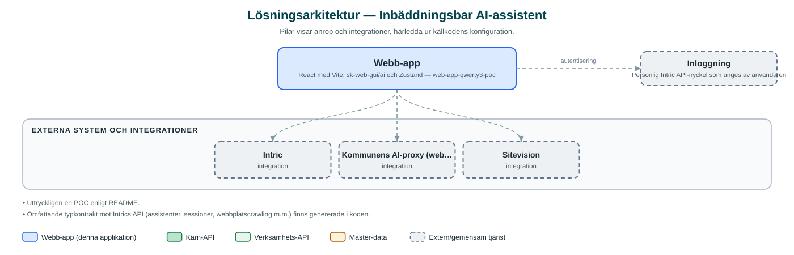

Inbäddningsbar AI-assistent
Proof of concept för en AI-assistent som kan bäddas in på valfri webbplats eller köras fristående, där användaren kan chatta med och själv skapa assistenter.
Om applikationen
Appen prövar ett koncept där en AI-assistent placeras där den behövs – fristående eller inbäddad på en befintlig webbplats via ett enkelt HTML-element. Bygget är förberett för publicering som webbapp i Sitevision, kommunens webbplattform.
Användaren kan chatta med assistenter i ett sökfälts- eller popup-gränssnitt, växla mellan favoritassistenter och se tidigare sessioner. Det går även att skapa egna assistenter med profil, instruktioner och kunskapskällor, inklusive uppladdade filer, direkt i gränssnittet.
Assistenterna drivs av kommunens AI-plattform Intric, och användaren identifierar sig med en personlig Intric-nyckel. Som POC är detta ett koncepttest snarare än en färdig tjänst.
Det här stödjer applikationen
- Inbäddning på webbplats – Assistenten läggs in på en sida med ett enkelt HTML-element, med stöd för shadow DOM.
- Chatt med AI-assistenter – Ställ frågor och få strömmande svar, med historik över tidigare sessioner.
- Egna assistenter – Skapa och redigera assistenter med profil, instruktioner och kunskapskällor.
- Filuppladdning – Ladda upp filer som underlag i konversationen eller som datakälla.
- Assistentväljare – Växla mellan rekommenderade assistenter, favoriter och egna assistenter.
Teknisk dokumentation
Nedan beskrivs hur applikationen är uppbyggd, vilka API:er den använder och vad som krävs för att driftsätta den. Informationen är härledd ur källkoden och dess konfiguration på GitHub.
Arkitektur

Applikationen är en webbaserad frontend (React med Vite, sk-web-gui/ai och Zustand). Inloggning: Personlig Intric API-nyckel som anges av användaren. Övriga integrationer som förekommer i koden: Intric, Kommunens AI-proxy (web-app-intric-backend), Sitevision.
Teknikstack
- Frontend: React med Vite, sk-web-gui/ai och Zustand
API-beroenden
Inga prenumerationer på kommunens API-plattform hittades i källkodens konfiguration.
Konfiguration och driftsättning
- .env utifrån .env.example (VITE_API_BASE_URL till AI-proxyn)
- index.html skapas från index.html.example
- Produktionsbygget kopieras till Sitevision-webbappens källkatalog
Noterbart ur källkoden
- Uttryckligen en POC enligt README.
- Omfattande typkontrakt mot Intrics API (assistenter, sessioner, webbplatscrawling m.m.) finns genererade i koden.
Källkod
Källkoden är öppen och finns hos Sundsvalls kommun på GitHub. I källkodsförrådet finns även instruktioner för att klona, konfigurera och starta applikationen i egen miljö.